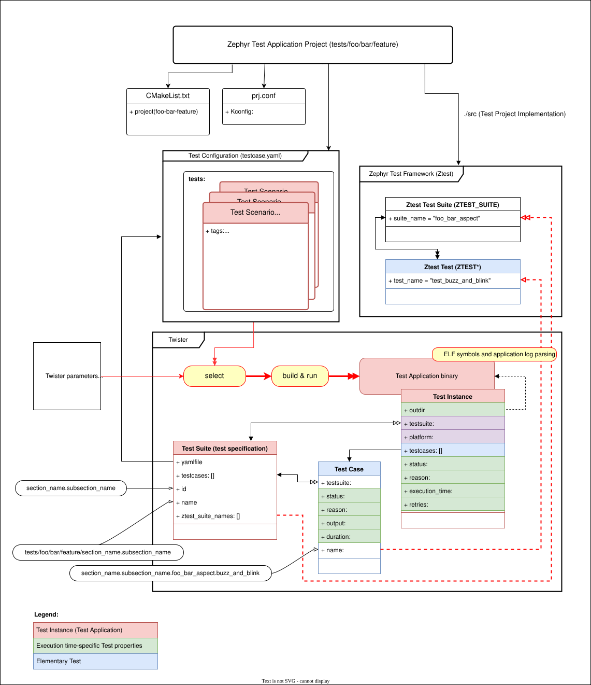

测试运行器（Twister）
Twister 会扫描 git 仓库中的测试应用程序集合并尝试执行它们。默认情况下，它会尝试在开发板定义文件中标记为默认的开发板上构建每个测试应用程序。
使用默认选项时，Twister 会在一组指定的开发板上构建大部分测试应用程序；如果被测架构或配置有可用的仿真环境，还会在仿真环境中运行这些测试。
由于测试执行的覆盖范围有限，twister 无法保证本地修改在完整构建环境中一定能成功。不过，它会针对不同开发板和不同配置构建示例和测试，进行足够的测试，帮助保持整个代码树可以成功构建。
使用（至少）一个 -v 选项时，twister 的控制台输出会显示每个测试应用程序的运行方式（qemu、native_sim 等），或者只构建了二进制文件。测试最终的 状态 同样会记录在 twister.json 和其他报告文件中。twister 只构建而不运行测试的原因有以下几种：
测试在其
.yaml配置文件中标记为build_only: true。测试配置中定义了
harness，但你没有该 harness 或尚未设置。目标设备未连接，无法进行烧录
你或某个更高层的自动化流程在调用 twister 时使用了
--build-only。
要在本地代码树中运行 Twister，请按照以下步骤操作：
$ west twister
备注
本文档中的示例以 west twister 的形式调用 Twister，即 west 扩展命令，它在所有主机操作系统上的用法相同。以下调用方式是等价的：
west twister ...（推荐）。python .\scripts\twister ...（Windows）：直接调用脚本。这需要先设置 Zephyr 环境（source zephyr-env.sh或zephyr-env.cmd）。
所有形式都接受相同的命令行选项。
如果要在一个或多个特定平台上运行测试，可以使用 --platform 选项。它是测试的平台过滤器，使用该选项时，测试套件只会在指定的平台上构建/运行。该选项还支持同一开发板的不同版本，可以使用 --platform board@revision 在特定版本上进行测试。
twister 支持的命令行选项列表可以通过 west twister --help 查看。完整的选项请参见 命令行选项。
以下页面介绍了 Twister 的其他主题：
开发板配置
要为特定开发板构建测试，并在真实硬件或 QEMU 等仿真环境中执行部分测试，需要一个开发板配置文件。该文件足够通用，也可用于其他需要开发板清单的任务；这类清单包含开发板及其配置的详细信息，否则这些信息只有在构建时才能获得。
开发板元数据文件位于开发板目录中，采用 YAML 标记语言编写。下面的示例展示了一块开发板，其中包含为该开发板实现最佳测试覆盖所需的数据：
identifier: frdm_k64f
name: NXP FRDM-K64F
type: mcu
arch: arm
toolchain:
- zephyr
- gnuarmemb
supported:
- arduino_gpio
- arduino_i2c
- netif:eth
- adc
- i2c
- nvs
- spi
- gpio
- usb_device
- watchdog
- can
- pwm
testing:
default: true
- identifier:
与构建系统中开发板定义方式相匹配的字符串。构建时也使用该字符串，例如调用
west build或cmake时：# with west west build -b reel_board # with cmake cmake -DBOARD=reel_board ..
- name:
开发板在市场宣传材料中使用的实际名称。
- vendor:
开发板厂商。供测试场景过滤器
vendor_allow和vendor_exclude使用。- tier:
可选的整数，表示开发板的支持等级。用于报告，以及按支持程度对平台进行分组。
- type:
开发板或配置的类型。取值为
mcu、qemu、sim、unit或native之一。- simulation:
用于仿真该平台的模拟器，例如 qemu。
simulation: - name: qemu - name: armfvp exec: FVP_Some_Platform - name: custom exec: AnotherBinary
默认情况下，测试会使用 simulation 数组中的第一项执行。可以通过
--simulation <simulation_name>选择其他仿真器。exec属性是可选的：如果设置了该属性但所需的模拟器不可用，则只构建测试；如果未设置该属性且所需的模拟器不可用，则测试将无法运行。仿真名称必须与SUPPORTED_EMU_PLATFORMS中的某个元素一致。- arch:
开发板的架构
- toolchain:
可以构建该开发板的受支持工具链列表。其取值应与在命令行构建时
ZEPHYR_TOOLCHAIN_VARIANT所使用的某个值一致。除非指定了--force-toolchain，否则 Twister 会过滤掉工具链不在该列表中的所有测试实例。该列表说明哪些工具链 可以 构建该开发板，但并不选定其中某一个；参见 工具链选择。- preferred_toolchain:
在没有其他方式选定工具链时，Twister 应为该平台使用的工具链。对于名义上可以用多种工具链构建、但应使用特定工具链进行测试的开发板，这个选项很有用。参见 工具链选择。
- build_toolchains:
可选的工具链列表，分配给该平台的每个测试都应使用这些工具链进行构建。Twister 不会为该平台只选择一个工具链，而是为列表中的每个工具链各创建一个测试实例，每个实例使用各自的构建目录。例如，要在
native_sim上同时使用 GCC 和 Clang 构建所有内容：build_toolchains: - host/gnu - host/llvm
由于这会成倍增加构建时间，通常最好不要将其写入开发板定义，而是只在 CI 中通过 Twister 配置文件 的
build_toolchains选项启用。参见 工具链选择。- ram:
开发板上可用的 RAM（单位为 KB）。用于匹配测试场景的要求。如果未指定，默认为 128KB。
- flash:
开发板上可用的 Flash（单位为 KB）。用于匹配测试场景的要求。如果未指定，默认为 512KB。
- sysbuild: [True|False]（默认 False）
如果为 true，则默认使用 sysbuild 构建该平台的应用程序。
- twister: [True|False]（默认 True）
如果为 false，Twister 会完全忽略该平台，永远不会在其上构建或运行测试。
- supported:
该开发板支持的功能列表。可以指定为单个单词的功能，也可以指定为某个功能类别的变体。例如：
supported: - pci
这表示该开发板支持 PCI。你可以让某个测试场景只在这类开发板上构建或运行，或者：
supported: - netif:eth - sensor:bmi16
测试场景可以依赖 'eth'，只测试以太网；也可以依赖 'netif'，从而在任何带有网络接口的开发板上运行。
- testing:
与测试相关的关键字，用于为该开发板的功能提供最佳的测试覆盖。
- binaries:
设备测试时需要保留的自定义二进制文件列表。
- default: [True|False]:
表示这是一块默认开发板，它将以最高优先级进行测试，并且在不带任何额外参数调用简化版 twister 时也会被覆盖到。
- ignore_tags:
不尝试构建（因而也不运行）带有该列表中标签的测试。
- only_tags:
在特定平台上只执行带有该列表中标签的测试。
- timeout_multiplier: <float>（默认 1）
将每个测试场景的超时乘以指定的倍数。该选项可以只针对所需的平台调整超时，适用于本身运行较慢的平台，例如 CPU 功耗低但速度慢的硬件开发板，或者能够进行指令级精确仿真但速度较慢的仿真平台。
- flash_before: [True|False]（默认 False）
在 pytest/shell harness 硬件测试中，先烧录设备再打开串口。这可以避免某些开发板（例如在烧录操作期间会复位的 USB CDC 设备）在烧录时出现串口断开的问题。
- renode:
Renode 模拟器的配置。支持两个键：
uart表示 harness 所连接的 UART 外设（例如sysbus.uart0），resc表示用于设置仿真机器的 Renode 脚本（.resc）。
- env:
环境变量列表。Twister 会检查这些环境变量是否都已设置，否则跳过该平台。这样用户就可以定义一个仅在某些所需软件或硬件存在时才使用的平台，并通过这些环境变量向 twister 表明其存在。
- variants:
从开发板变体（限定符）名称到各变体覆盖配置的映射。每个条目本身就是一个平台定义，可以针对该变体覆盖上述任意键，其余值则继承自顶层定义。
工具链选择
有多个选项会影响测试使用哪个工具链构建。它们分为三类：选择 工具链的选项、过滤 掉工具链不可用的测试实例的选项，以及将一个测试 扩展 为多次构建的选项。
Twister 首先调用 cmake/verify-toolchain.cmake 确定整个运行的默认工具链，该脚本会遵循 ZEPHYR_TOOLCHAIN_VARIANT 环境变量。该值会在运行开始时以 Using '<toolchain>' toolchain variant. 的形式报告。
然后，对于每一对测试场景和平台，按以下顺序选用第一个适用的方式来选择工具链：
测试场景的
integration_toolchains（如果已设置）。测试会针对列出的每个工具链各构建一次。平台的
build_toolchains（如果已设置），可以在开发板配置中或 Twister 配置文件 中设置。测试会针对列出的每个工具链各构建一次。对于
posix和unit平台：如果运行默认值为host/llvm，则使用host/llvm，否则使用host/gnu。平台的
preferred_toolchain（如果已设置）。上文所述的运行默认值；如果无法确定，则使用
zephyr。
注意，ZEPHYR_TOOLCHAIN_VARIANT 只会改变运行默认值，即该列表中的最后一项。它不会覆盖平台的 preferred_toolchain 或 build_toolchains，也不会覆盖场景的 integration_toolchains。
选定工具链后，生成的测试实例仍可能被过滤掉：
如果该工具链不在平台所支持工具链的
toolchain列表中，该实例会被过滤掉。--force-toolchain会禁用此项检查，并无条件使用所选的工具链。比较时只匹配/之前的部分也算成功，因此host/gnu与列出了host的平台相匹配。场景的
toolchain_allow和toolchain_exclude选项按所选工具链过滤实例。
由于 integration_toolchains 和 build_toolchains 会为每个工具链生成一个测试实例，它们会成倍增加构建时间。因此，build_toolchains 通常不写入开发板配置，而只在 CI 使用的配置文件中启用。
测试
测试是通过应用程序项目目录中是否存在 tests.yaml 文件（对 sample.yaml 和 testcase.yaml 的支持已弃用）来检测的。该测试应用程序配置文件的 tests: 部分可以包含一个或多个条目，每个条目标识一个测试场景（Test Scenario）。

测试应用程序配置使用 YAML 语法编写，其结构与示例相同。
测试场景是在测试场景条目中定义的一组条件和变量，一组测试套件会在这些条件和变量下构建和执行。
测试套件是测试用例（Test Case）的集合，用于测试软件程序，确保其满足特定要求。测试套件中的测试用例要么彼此相关，要么需要一起执行。
测试场景、测试套件和测试用例的名称必须遵循以下基本规则：
测试场景标识符的格式应为不含空格或特殊字符的字符串（允许的字符：字母数字和 [_=]），由多个以点（
.）分隔的部分组成。每个测试场景标识符都应以一个部分名称开头，后跟以点（
.）分隔的子部分名称。例如，覆盖内核信号量的测试场景应以kernel.semaphore开头。在 Twister 的执行范围内，所有测试场景名称都必须唯一。
测试套件的完整规范名称为：
<Test Application Project path>/<Test Scenario identifier>根据测试套件的实现方式，其测试用例标识符由 至少三个 以点（
.）分隔的部分组成：Ztest 测试：对应
testcase.yaml文件中的测试场景标识符、Ztest 套件名称和 Ztest 测试名称：<Test Scenario identifier>.<Ztest suite name>.<Ztest test name>独立测试和示例：对应
tests.yaml文件中的测试场景标识符，其最后一部分表示独立测试用例的名称，例如：debug.coredump.logging_backend。
下面是一个测试配置示例，其中包含本文档中介绍的几个选项。
tests: bluetooth.gatt: build_only: true platform_allow: - qemu_cortex_m3 - qemu_x86 tags: - bluetooth bluetooth.gatt.br: build_only: true extra_args: -CONF_FILE="prj_br.conf" filter: not CONFIG_DEBUG platform_exclude: -up_squared platform_allow: - qemu_cortex_m3 qemu_x86 tags: - bluetooth
带有测试的示例具有相同的结构，另外还包含与该示例及其演示内容相关的信息：
sample: name: hello world description: Hello World sample, the simplest Zephyr application tests: sample.basic.hello_world: build_only: true tags: - tests min_ram: 16 sample.basic.hello_world.singlethread: build_only: true extra_args: CONF_FILE=prj_single.conf filter: not CONFIG_BT tags: - tests min_ram: 16
tests: YAML 字典中的测试场景条目以其测试场景标识符作为键。
测试应用程序配置中的每个测试场景条目都可以定义以下键/值对：
- tags: <标签列表>（必需）
测试场景的一组字符串标签。通常与功能领域相关，但也可以是任意内容。通过命令行调用该脚本时，可以根据标签过滤要运行的测试集合。
- skip: <True|False>（默认 False）
无条件跳过测试场景。例如，可用于已损坏的测试。
- slow: <True|False>（默认 False）
除非在命令行中传入了
--enable-slow或--enable-slow-only，否则不运行该测试场景。适用于只在特定情况下（例如每日构建）运行的耗时测试场景。这些测试场景仍然会被编译。- extra_args: <额外参数列表>
构建或运行测试场景时传递给构建工具的额外参数。
借助命名空间，可以只对某些硬件应用 extra_args。目前支持架构/平台/仿真：
common: tags: - drivers - adc tests: test: depends_on: adc test_async: extra_args: - arch:x86:CONFIG_ADC_ASYNC=y - platform:qemu_x86:CONFIG_DEBUG=y - platform:mimxrt1060_evk:SHIELD=rk043fn66hs_ctg - simulation:qemu:CONFIG_MPU=y
- extra_configs: <额外配置列表>
构建或运行测试场景时，要与主 prj.conf 合并的额外配置选项。例如：
common: tags: - drivers - adc tests: test: depends_on: adc test_async: extra_configs: - CONFIG_ADC_ASYNC=y
借助命名空间，可以只对某些硬件应用某项配置。目前支持架构和平台：
common: tags: - drivers - adc tests: test: depends_on: adc test_async: extra_configs: - arch:x86:CONFIG_ADC_ASYNC=y - platform:qemu_x86:CONFIG_DEBUG=y
- extra_conf_files: <配置文件列表>
要合并到构建中的额外 Kconfig 片段文件，可以替代通过
extra_args传递CONF_FILE=的方式。common与测试场景中的条目会被串联起来。对于配置文件，应优先使用该字段而不是extra_args。- extra_overlay_confs: <覆盖配置文件列表>
要合并到构建中的额外 Kconfig 覆盖片段，可以替代通过
extra_args传递OVERLAY_CONFIG=的方式。common与测试场景中的条目会被串联起来。- extra_dtc_overlay_files: <设备树覆盖文件列表>
要应用到构建中的额外设备树覆盖文件，可以替代通过
extra_args传递DTC_OVERLAY_FILE=的方式。common与测试场景中的条目会被串联起来。- build_only: <True|False>（默认 False）
如果为 true，即使测试可以在该平台上运行，twister 也不会尝试运行它。
该关键字专用于检验某些代码能否成功构建的测试。
build_only测试不打算在任何环境中运行，也不应测试任何功能，它只验证代码能够构建。该选项常用于测试驱动（例如传感器驱动），检验它们在 Zephyr 中能被正确启用且代码可以构建。此类测试不应用于验证驱动的功能。
- build_on_all: <True|False>（默认 False）
如果为 true，则尝试在所有可用平台上构建测试场景。这主要用于 CI 中以提高覆盖率。不要在新测试中使用该标志。
- depends_on: <功能列表>
开发板或平台可以声明自己支持哪些功能，该选项只会在提供该功能的平台上启用测试。
- levels: <级别列表>
该测试所属的测试级别。如果设置了某个级别，就可以通过命令行选项
--level <level name>选中该测试。- min_ram: <integer>
构建和运行该测试所需的最小 RAM 估计值，单位为 KB。会与开发板元数据提供的信息进行比较。
- min_flash: <integer>
构建和运行该测试所需的最小 ROM 估计值，单位为 KB。会与开发板元数据提供的信息进行比较。
- timeout: <秒数>
测试运行多长时间后会被自动终止。默认为 60 秒。
- arch_allow: <架构列表，例如 x86、arm、arc>
该测试场景只应在其上运行的架构集合。
- arch_exclude: <架构列表，例如 x86、arm、arc>
该测试场景不应在其上运行的架构集合。
- toolchain_allow: <工具链变体列表>
该测试场景只应针对其运行的工具链变体集合。这里的工具链是为本次运行配置的工具链（参见
ZEPHYR_TOOLCHAIN_VARIANT）。使用其他任何工具链构建的平台都会被过滤掉。- toolchain_exclude: <工具链变体列表>
该测试场景不应针对其运行的工具链变体集合。
- vendor_allow: <厂商列表>
该测试场景只应在其上运行的平台厂商集合。厂商在开发板定义中指定。与这些厂商相关联的开发板会被包含在内，其他开发板（包括没有厂商的开发板）会被排除。
- vendor_exclude: <厂商列表>
该测试场景不应在其上运行的平台厂商集合。厂商在开发板中指定。与这些厂商相关联的开发板会被排除。
- platform_allow: <平台列表>
该测试场景只应在其上运行的平台集合。不要因为时间或资源限制而使用该选项来限制 CI 中的测试或构建；只有当测试或示例只能在允许的平台上运行、而不能在其他任何平台上运行时，才应使用该选项。
- integration_platforms: <平台/开发板的 YML 列表>
当使用
--integration选项调用 twister 时，该选项会将范围限制在列出的平台上。如果目的是因时间或资源限制而缩小范围，请使用该选项而不是 platform_allow。- integration_toolchains: <工具链变体的 YML 列表>
该选项会将范围扩展到列出的所有工具链变体，在需要时增加一个测试维度。默认情况下，测试配置是根据环境中配置的工具链生成的：
test scenario -> platforms1 -> toolchain1 test scenario -> platforms2 -> toolchain1
如果某个平台支持多个在 twister 运行期间可用的工具链，就可以扩展测试配置，为每个工具链增加额外的测试。例如，如果某个平台支持
toolchain1和toolchain2两个工具链，且测试场景包含：integration_toolchains: - toolchain1 - toolchain2
将生成以下配置：
test scenario -> platforms1 -> toolchain1 test scenario -> platforms1 -> toolchain2 test scenario -> platforms2 -> toolchain1 test scenario -> platforms2 -> toolchain2
备注
该功能始终会被评估，并不局限于
--integration选项。该选项的优先级高于平台的
build_toolchains。如果要针对某个平台上的所有测试（而不是按测试场景）扩展工具链范围，请使用build_toolchains。参见 工具链选择。- platform_exclude: <平台列表>
该测试场景不应在其上运行的平台集合。
- platform_type: <平台类型列表>
将该测试场景限制在给定类型的平台上。平台的类型通过其开发板元数据中的
type:键声明。支持的值有mcu、qemu、sim、unit和native。类型不在该列表中的平台会被过滤掉。- simulation_exclude: <模拟器列表>
该测试场景不应在其上运行的模拟器集合。支持的值有
qemu、simics、xt-sim、renode、nsim、mdb-nsim、tsim、armfvp、native和custom。- extra_sections: <额外二进制段列表>
计算大小时，如果 twister 在 Zephyr 二进制文件中发现了额外的、意料之外的段，就会报告错误，除非这些段在此处列出。列出的段不会计入大小计算。
- sysbuild: <True|False>（默认 False）
使用 sysbuild 基础设施构建项目。过滤测试时只使用主项目生成的设备树和 Kconfig。在设备上测试时，必须使用硬件映射或 west flash 将镜像加载到目标上。该选项不支持 west flash 的
--erase选项。使用不受支持的选项会导致需要 sysbuild 支持的测试被跳过。- harness: <string>
testcase.yaml文件中的 harness 关键字用于指明成功运行测试所需的 Twister harness。harness 是 Twister 的一项功能，由 Twister 实现；有些 harness 只是作为占位符定义，尚未实现。可以把 harness 看作需要在 Twister 中实现的处理程序，用于评估测试是否满足通过标准。例如，需要键盘交互才能判定测试通过或失败的测试会设置 keyboard harness，但 Twister 目前尚未实现该 harness。
支持的 harness：
ztest
test
console
pytest
gtest
robot
ctest
shell
power
display_capture
script
bsim
更多信息请参见 Harness。
- platform_key: <平台属性列表>
很多时候，一个测试只需构建并运行一次即可判定为通过。设想有一个依赖于平台架构的代码库，对每种架构只要在一个平台上通过测试，就足以判定测试和代码通过。platform_key 属性正是用于实现这一点。
例如，以 (arch, simulation) 作为键，确保测试对每种架构和仿真组合只运行一次（这是最常见的用法）：
platform_key: - arch - simulation
如果加入更多平台（开发板）属性，例如 SoC 名称、SoC 系列，或许还有实现各外设接口的 IP 模块集合，还能实现其他有趣的用法。例如，可以针对每种不同的 IP 模块只构建和运行一次 SPI 测试。
- harness_config: <harness 配置选项>
额外的 harness 配置选项，用于选择开发板，和/或用于处理基于正则表达式匹配的通用 Console。配置可以声明其支持的功能。该选项会使测试只在满足这一外部依赖的平台上运行。
- fixture: <字符串或列表>
指定测试场景对外部设备（例如传感器）的依赖，并标识满足该依赖的测试环境。在自动化环境中，它依赖于特定的测试环境和开发板选择逻辑，根据
fixture关键字从多个满足依赖的开发板中挑选出特定的开发板。fixture 名称示例有 i2c_hts221、i2c_bme280、i2c_FRAM、ble_fw 和 gpio_loop。- ztest_suite_repeat: <int>（默认 1）
该参数指定整个测试套件应重复执行的次数。
- ztest_test_repeat: <int>（默认 1）
该参数指定测试套件中每个测试应重复执行的次数。
- ztest_test_shuffle: <True|False>（默认 False）
该参数表示是否打乱测试套件中各测试的执行顺序。设为
true时，测试将以随机顺序执行。
下面是一个包含 robot harness_config 选项的 yaml 文件示例。
tests: robot.example: harness: robot harness_config: robot_testsuite: [robot file path]
可以使用列表指定多个测试套件。
tests: robot.example: harness: robot harness_config: robot_testsuite: - [robot file path 1] - [robot file path 2] - [robot file path n]
可以向 robotframework 传递一个或多个选项。
tests: robot.example: harness: robot harness_config: robot_testsuite: [robot file path] robot_option: - --exclude tag - --stop-on-error
- filter: <expression>
通过对包含以下值的环境求值表达式，来过滤是否应运行该测试场景：
{ ARCH : <architecture>, PLATFORM : <platform>, <all CONFIG_* key/value pairs in the test's generated defconfig>, *<env>: any environment variable available }Twister 首先会对表达式求值，以确定能否进行一次“受限”的 cmake 调用，即使用 package_helper cmake 脚本。
存在 "dt_*" 条目表示需要设备树。各种可用的设备树表达式的详细说明请参阅 设备树过滤表达式。
存在 "CONFIG*" 条目表示需要 kconfig。如果表达式中没有其他类型的条目，则无需创建完整的构建系统即可完成过滤；如果有其他类型的条目，则需要完整运行 cmake。
表达式语言的语法如下：
expression : expression 'and' expression | expression 'or' expression | 'not' expression | '(' expression ')' | symbol '==' constant | symbol '!=' constant | symbol '<' NUMBER | symbol '>' NUMBER | symbol '>=' NUMBER | symbol '<=' NUMBER | symbol 'in' list | symbol ':' STRING | symbol ; list : '[' list_contents ']'; list_contents : constant (',' constant)*; constant : NUMBER | STRING;
对于
expression ::= symbol的情况，如果该符号被定义为非空字符串，则求值结果为true。运算符优先级，从低到高依次为：
or（左结合）
and（左结合）
not（右结合）
所有比较运算符（不可结合）
arch_allow、arch_exclude、platform_allow、platform_exclude都是这些表达式的语法糖。例如：arch_exclude = x86 arc
等同于：
filter = not ARCH in ["x86", "arc"]
:运算符会将字符串参数编译为正则表达式，只有当该符号在环境中的值与之匹配时才返回真值。例如，如果CONFIG_SOC="stm32f107xc"，那么filter = CONFIG_SOC : "stm.*"
就能与之匹配。
- required_snippets: <所需代码片段列表>
twister 支持为需要 代码片段（snippet） 的测试场景使用代码片段。与普通应用程序一样，twister 支持在 zephyr 基础代码片段目录和测试应用程序目录中查找代码片段。列出的代码片段会过滤开发板所支持的测试（代码片段必须与开发板兼容，测试才能在该开发板上运行，这些代码片段不是可选的）。
下面是一个包含 2 个所需代码片段的 yaml 文件示例。
tests: snippet.example: required_snippets: - cdc-acm-console - user-snippet-example
- required_applications: <所需应用程序列表>（默认为空）
指定在当前测试运行之前必须构建的测试应用程序列表。这样可以在测试场景之间共享已构建的应用程序，使测试能够访问其他应用程序的构建产物。
每个所需应用程序条目支持：
application：测试场景标识符（必需）name：application的已弃用别名（为保持向后兼容仍可使用，但新配置中应使用application）platform：目标平台（可选，默认为当前测试的平台）path：Twister 搜索该应用程序的目录路径（可选）。可以是绝对路径，也可以是相对于测试 YAML 文件所在目录的路径。其中的环境变量和 Zephyr 模块目录变量会被展开（参见 使用模块目录变量展开路径）。如果未指定，Twister 会在引用方测试 YAML 文件所在的目录中搜索。
所需应用程序会由 Twister 自动发现和构建。如果某个所需应用程序尚未加载，Twister 会在
path指定的目录中搜索它；如果未设置path，则在引用方测试 YAML 文件所在的目录中搜索。在复用构建目录时（例如使用--no-clean），Twister 可以在当前构建目录中找到所需应用程序。工作原理：
Twister 首先构建所需应用程序
主测试应用程序等待所需应用程序完成
所需应用程序的构建目录会提供给测试 harness
对于 pytest harness，构建目录通过
--required-build参数传递，并可通过required_build_dirsfixture 访问
与
build: false结合使用时，当前测试场景会完全跳过自身的构建步骤，并使用第一个所需应用程序的构建产物作为其镜像。这适用于纯粹作为测试 harness、为别处构建的镜像执行测试的场景。配置示例：
tests: # Requires two applications, second one from a different path and with a fixed platform sample.required_app_demo: harness: pytest required_applications: - application: sample.shared_app - application: other.app path: ../other_app platform: native_sim # No self build, use the first required application as the test image sample.no_self_build: build: false harness: pytest required_applications: - application: sample.basic.helloworld path: $ZEPHYR_BASE/samples/hello_world sample.shared_app: build_only: true
限制：
不支持与
--runtime-artifact-cleanup一起使用，因为所需应用程序的构建产物必须保留，供主测试应用程序使用。不支持与
--subset一起使用：所需应用程序和依赖它的测试可能被分配到不同的子集，导致执行测试时无法获得构建产物。
- build: <True|False>（默认 True）
如果为 false，测试场景会跳过自身的构建步骤，并使用
required_applications中第一个条目的构建产物作为其镜像。这适用于纯粹作为测试 harness、为另一个场景构建的镜像执行测试的场景。约束：
required_applications不能为空。支持的 harness：基于 pytest 的 harness（例如
pytest、shell）以及bsim。不支持 QEMU 平台。
- expect_reboot: <True|False>（默认 False）
告知 twister 该测试场景在执行过程中预计会重启。启用后，twister 将不再对测试套件或测试用例意外多次运行发出警告。
- modules: <模块名称列表>
仅当工作区中存在列出的所有 模块 时，才构建和运行该测试场景。需要不可用模块的场景会被过滤掉。
- type: <string>（默认为 integration）
场景的测试类型。对于为 unit_testing 开发板 构建、无需完整 Zephyr 构建系统即可在主机上运行的单元测试，设为
unit。- testcases: <测试用例名称列表>
显式声明组成该场景的测试用例名称列表。这通常会被自动检测（例如从 ztest 源码中），只有对于无法自省的 harness 才需要设置。
- ignore_faults: <True|False>（默认 False）
如果测试运行期间在输出中检测到故障，不将测试场景标记为失败。
- ignore_qemu_crash: <True|False>（默认 False）
如果测试运行期间 QEMU 崩溃，不将测试场景标记为失败。
实际运行的测试场景集合取决于测试场景文件中的指令以及命令行中传入的选项。如有疑问，可以使用 -v 运行，或查看 测试计划（testplan.json），以了解特定测试场景被过滤掉的原因。
要从文件加载参数，请在文件名前加上 +，例如 +file_name。文件内容必须是一个或多个有效参数，参数之间以换行符而不是空白字符分隔。
大多数日常用户不带任何参数运行。
使用模块目录变量展开路径
测试场景文件中的路径选项（例如 required_applications、harness_config: pytest_root）在使用前会被展开。除环境变量外，Twister 还会展开 Zephyr 模块目录变量，这些变量与为每个模块定义的 CMake 变量相对应：
ZEPHYR_<MODULE>_MODULE_DIR- 模块根目录的绝对路径。ZEPHYR_<MODULE>_MODULE_NAME- 模块的名称。
<MODULE> 会转换为大写，并将非字母数字字符替换为 _，与 CMake 的做法完全相同（例如 hal_nordic 模块对应 $ZEPHYR_HAL_NORDIC_MODULE_DIR）。未知的引用保持不变。
管理测试超时
有多个参数在不同层面控制测试超时：
每个测试场景中的
timeout选项。详见 此处。开发板配置中的
timeout_multiplier选项。详见 此处。twister 选项
--timeout-multiplier，可用于调整某次 twister 运行中的超时。它适用于仿真平台等场合，因为仿真时间可能取决于主机的速度和负载，或者我们可能选择了不同的仿真方法（例如周期精确但较慢的方法）等。
测试场景的总超时是这三个参数的乘积。
设备树过滤表达式
以 "dt_*" 开头的表达式用于在选择测试场景时，根据特定的设备树属性（例如 compatible、别名、节点标签、节点属性、chosen 节点等）过滤开发板。
备注
这些表达式的源代码位于 scripts/pylib/twister/expr_parser.py。
表达式
dt_compat_enabled(compat)
- 用途：
检查是否有任何具有指定 compatible 字符串（
compat）的设备树节点处于启用状态。- 参数：
compat：要匹配的 compatible 字符串。
dt_alias_exists(alias)
- 用途：
检查是否存在具有指定别名且处于启用状态的设备树节点。
- 参数：
alias：要匹配的别名（在aliases节点中定义）。
dt_enabled_alias_with_parent_compat(alias, compat)
- 用途：
检查设备树中是否有一个已启用的别名节点，且其父节点具有指定的 compatible 字符串。适用于
gpio-leds子节点这类可能没有自身 compatible 的节点。- 参数：
alias：要匹配的别名（在aliases节点中定义）。compat：要匹配的父节点 compatible 字符串。
dt_label_with_parent_compat_enabled(label, compat)
- 用途：
检查是否存在具有指定标签的设备树节点，该节点处于启用状态，且其父节点具有指定的 compatible 字符串。
- 参数：
label：要匹配的节点标签。compat：要匹配的父节点 compatible 字符串。
dt_label_compat_enabled(label, compat)
- 用途：
检查是否存在具有指定标签的设备树节点，该节点处于启用状态，且具有指定的 compatible 字符串。
- 参数：
label：要匹配的节点标签。compat：要匹配的节点 compatible 字符串。
dt_chosen_enabled(chosen)
- 用途：
检查是否存在具有指定名称的设备树 chosen 属性，且分配给它的节点处于启用状态。
- 参数：
chosen：chosen 属性的名称。
dt_nodelabel_enabled(label)
- 用途：
检查是否存在具有指定标签且处于启用状态的设备树节点。
- 参数：
label：要匹配的节点标签。
dt_nodelabel_prop_enabled(label, prop)
- 用途：
检查是否存在具有指定标签的设备树节点，该节点处于启用状态，且具有值不为空的指定属性。
- 参数：
label：要匹配的节点标签。prop：要检查的节点属性。
dt_node_has_prop(node_id, prop)
- 用途：
检查某个设备树节点（通过别名或路径指定）是否具有指定的属性，而不考虑其状态。适用于
zephyr,user这类没有 status 的节点。- 参数：
node_id：要匹配的节点别名（在aliases节点中定义）或节点路径。prop：要检查的节点属性。
用法
这些表达式用于 Twister 的测试场景过滤逻辑，以选出满足特定设备树条件的开发板。例如：
tests:
- test: my_test
filter: dt_compat_enabled("my-compat-string")
测试场景 my_test 只会为启用了具有 my-compat-string 的设备树节点的开发板构建。
Harness
harness 是 Twister 用来运行测试并判定测试通过或失败的机制。测试镜像构建完成并在目标（真实硬件、模拟器或主机）上启动后，harness 负责与正在运行的镜像进行交互（提供输入、捕获输出，或将执行交给外部测试运行器），并解析结果，为每个测试用例分配一个 状态。
测试场景通过其 tests.yaml 中的 harness: 条目选择 harness，并通过 harness_config 调整其行为。如果未指定 harness，则使用默认的 test harness。不同的 harness 满足不同的需求：有些将设备的控制台输出与预期模式进行比对，有些则将执行委托给 pytest、Robot Framework 或 ctest 等外部框架。下方链接的页面介绍了每种受支持的 harness 及其 harness_config 选项。
ztest、gtest 和 console harness 基于对输出的解析和对特定短语的匹配。ztest 和 gtest harness 会查找这两个框架中定义的通过/失败等格式的输出。
一些广泛使用但尚未支持的 harness：
keyboard
net
bluetooth
下面是一个包含若干 harness_config 选项的 yaml 文件示例。
sample:
name: HTS221 Temperature and Humidity Monitor
common:
tags:
- sensor
harness: console
harness_config:
type: multi_line
ordered: false
regex:
- "Temperature:(.*)C"
- "Relative Humidity:(.*)%"
fixture: i2c_hts221
tests:
test:
tags:
- sensors
depends_on: i2c
Sidecar
有些测试需要在整个运行期间存在某种主机端资源：仿真客户机与之通信的守护进程、主机在运行结束后读回的共享内存区域，或者客户机所连接的网络接口。sidecar 就是对此进行建模的机制。它通过测试场景 tests.yaml 中的 sidecar: 条目选择，与 harness 相互独立：harness 解析客户机的输出，而 sidecar 在运行前后准备主机端资源。因此，任何 harness（示例使用的 console、测试使用的 ztest 等）都可以与任何 sidecar 搭配使用。
tests:
some.test:
harness: ztest
sidecar: <name>
sidecar 有一个简单的生命周期，由 Twister 针对每个测试实例驱动：
configure：在准备任何资源之前，sidecar 从实例及其
sidecar_config块中读取所需信息。host check：在制定测试计划时，sidecar 报告主机是否提供了它所需的内容（例如是否安装了所需的守护进程二进制文件）。如果没有，该测试将 只构建 而不执行，这与未安装模拟器的平台完全相同。
setup：在处理程序运行测试镜像之前调用，用于启动主机资源（启动守护进程、创建接口等）。如果主机端仍然不可用（例如启动该资源需要的权限不具备），setup 会报告这一情况，Twister 将 跳过 执行，而不是使测试失败。
teardown：在处理程序返回后于
finally块中调用，因此即使测试失败或超时也总会执行。它负责释放资源，还可以收集客户机留下的数据（例如将共享内存区域读回到构建目录中）。
由于资源准备与输出处理相互解耦，Twister 还可以自行为实例附加 sidecar，而无需测试主动启用。例如，对于没有其他主机传输通道的客户机，可以借此将覆盖率数据导出。
每个 sidecar 在 sidecar_config 下以该 sidecar 命名的块中定义自己的配置键。按 sidecar 名称划分命名空间可以使各 sidecar 的键相互独立，因此只有与场景的 sidecar: 值相匹配的块才会被使用。例如，virtiofs sidecar 会共享一个从模板初始化的主机目录，配置如下：
tests:
some.test:
harness: console
sidecar: virtiofs
sidecar_config:
virtiofs:
shared: shared
选择平台范围
Twister 的关键功能之一是能够决定给定的测试场景应在哪些平台上运行。这种行为源于 Twister 最初是作为 Zephyr CI 的测试运行器而开发的。面对数百个可用平台和数千个测试，测试工具应当能够调整范围，选出相关的内容并过滤掉无关的内容。
Twister 总是会根据命令行参数和 测试的配置，为给定的测试准备一份范围内的初始平台列表。然后，不满足配置 yaml 中所要求条件（例如最小 RAM）的平台会被从范围中过滤掉。使用 --force-platform 可以覆盖由测试配置文件中 platform_allow、platform_exclude、arch_allow 和 arch_exclude 键导致的过滤。
命令行参数按以下方式定义初始范围：
-p/--platform <platform_name>（可多次使用）：只包含通过该参数传入的平台；-l/--all：所有可用平台；-G/--integration：给定测试配置文件中integration_platforms列表里的所有平台。如果测试没有integration_platforms，则会进行 “范围推定”；未指定范围参数：会进行 “范围推定”。
“范围推定”：使用 Twister 的 默认平台 列表作为初始列表。如果过滤后没有剩下任何平台，则使用 platform_allow 列表作为初始范围。
以集成模式运行
该模式用于持续集成（CI）和其他自动化环境，以便快速向开发者反馈修改的结果。可以使用 twister 的 --integration 选项激活该模式；如果适用，它会将构建和测试的范围缩小到测试配置文件（tests.yaml）中 integration 关键字下定义的平台。
在自定义模拟器上运行测试
除了已支持的 QEMU 和其他仿真环境外，Twister 还支持运行在开发板 board.cmake 中定义的任何树外自定义模拟器。要使用这类仿真，请在 custom_board/custom_board.yaml 中添加以下属性：
simulation:
- name: custom
exec: <name_of_emu_binary>
这会告诉 Twister，该开发板使用名为 <name_of_emu_binary> 的自定义模拟器，请确保该二进制文件在 PATH 中。
然后，在 custom_board/board.cmake 中将支持的仿真平台设为 custom：
set(SUPPORTED_EMU_PLATFORMS custom)
最后，在 custom_board/board.cmake 中实现 run_custom 目标，大致如下：
add_custom_target(run_custom
COMMAND
<name_of_emu_binary to invoke during 'run'>
<any args to be passed to the command, i.e. ${BOARD}, ${APPLICATION_BINARY_DIR}/zephyr/zephyr.elf>
WORKING_DIRECTORY ${APPLICATION_BINARY_DIR}
DEPENDS ${logical_target_for_zephyr_elf}
USES_TERMINAL
)
以随机顺序运行测试
启用 ZTEST 框架的 CONFIG_ZTEST_SHUFFLE 配置选项，即可以随机顺序运行测试。这有助于发现测试用例之间的依赖关系。对于 native_sim 平台，可以向 twister 传递参数 --seed=value，为随机数生成器提供种子。详情请参见 打乱测试顺序。
在硬件上运行测试
除了能在 QEMU 和其他仿真环境中运行测试外，twister 还支持在真实设备上运行大多数测试，并为每次运行生成包含详细 FAIL/PASS 结果的报告。
在单个设备上执行测试
要在单个已连接的设备上使用此功能，请使用以下新选项运行 twister：
west twister --device-testing --device-serial /dev/ttyACM0 \
--device-serial-baud 115200 -p frdm_k64f -T tests/kernel
west twister --device-testing --device-serial COM1 \
--device-serial-baud 115200 -p frdm_k64f -T tests/kernel
--device-serial 选项表示开发板所连接的串口设备。运行 twister 的用户需要具有该设备的访问权限。一次只能在一块开发板上运行，开发板通过 --platform 选项指定。如果平台支持多个串口，可以多次提供 --device-serial，这些串口会被传递给 pytest harness。也可以使用硬件映射，详情请参见 多核测试
只有当设备的波特率不是 115200 时，才需要使用 --device-serial-baud 选项。
要支持没有物理串口的设备，请使用 --device-serial-pty 选项。这种情况下，日志消息需要通过其他方式（例如使用脚本）捕获。此时可以使用以下选项运行 twister：
west twister --device-testing --device-serial-pty "script.py" \
-p intel_adsp/cavs25 -T tests/kernel
备注
Windows 操作系统不支持
该脚本由用户定义，负责传递消息，twister 可利用这些消息判定测试的执行状态。
--device-flash-timeout 选项用于为设备烧录操作设置明确的超时，例如当设备烧录耗时很长时。
--device-flash-with-test 选项表示在该平台上烧录操作同时会执行测试场景，因此烧录超时会加上测试场景的超时。
在多个设备上执行测试
要在连接到主机 PC 的多个设备上构建和执行测试，需要创建一个硬件映射，其中包含所有已连接的设备及其详细信息，例如串口设备、波特率以及设备 ID（如果有）。运行以下命令生成硬件映射：
$ west twister --generate-hardware-map map.yml
生成的硬件映射文件（map.yml）会列出已连接的设备，例如：
- connected: true
id: "OSHW000032254e4500128002ab98002784d1000097969900"
platform: unknown
product: DAPLink CMSIS-DAP
runner: pyocd
serial: /dev/cu.usbmodem146114202
- connected: true
id: "000683759358"
platform: unknown
product: J-Link
runner: unknown
serial: /dev/cu.usbmodem0006837593581
- connected: true
id: "OSHW000032254e4500128002ab98002784d1000097969900"
platform: unknown
product: unknown
runner: unknown
serial: COM1
- connected: true
id: "000683759358"
platform: unknown
product: unknown
runner: unknown
serial: COM2
所有标记为 unknown 的选项都需要修改并设置为正确的值。在上面的示例中，平台名称、产品和运行器需要替换为与所连接硬件对应的正确值。本例中使用的是 reel_board 和 nrf52840dk/nrf52840：
- connected: true
id: "OSHW000032254e4500128002ab98002784d1000097969900"
platform: reel_board
product: DAPLink CMSIS-DAP
runner: pyocd
serial: /dev/cu.usbmodem146114202
baud: 9600
- connected: true
id: "000683759358"
platform: nrf52840dk/nrf52840
product: J-Link
runner: nrfjprog
serial: /dev/cu.usbmodem0006837593581
baud: 9600
- connected: true
id: "OSHW000032254e4500128002ab98002784d1000097969900"
platform: reel_board
product: DAPLink CMSIS-DAP
runner: pyocd
serial: COM1
baud: 9600
- connected: true
id: "000683759358"
platform: nrf52840dk/nrf52840
product: J-Link
runner: nrfjprog
serial: COM2
baud: 9600
只有当波特率不是 115200 时，才需要 baud 条目。
如果映射文件已经存在，则会添加新条目并更新现有条目。这样就可以只使用一个主硬件映射，并在每次运行时更新它，以获得正确的串口设备和设备状态。
硬件映射准备好后，就可以指定该映射来运行任意测试
west twister --device-testing --hardware-map map.yml -T samples/hello_world/
west twister --device-testing --hardware-map map.yml -T samples\hello_world
上述命令会使 twister 为硬件映射中定义的平台构建测试，然后在这些平台上烧录并运行测试。
备注
目前，硬件映射功能只支持使用 pyocd、nrfjprog、jlink、openocd 或 dediprog 的开发板。需要其他运行器来烧录 Zephyr 二进制文件的开发板仍在开发中。
硬件映射允许分别通过 flash-timeout 和 flash-with-test 字段设置 --device-flash-timeout 和 --device-flash-with-test 命令行选项。对于特定平台，这些硬件映射值会覆盖命令行选项。
使用 --device-serial-pty 的串口 PTY 支持也可以在硬件映射中使用：
- connected: true
id: None
platform: intel_adsp/cavs25
product: None
runner: intel_adsp
serial_pty: path/to/script.py
runner_params:
- --remote-host=remote_host_ip_addr
- --key=/path/to/key.pem
runner_params 字段表示要传递给 west 运行器的参数。对于某些开发板，west 运行器需要一些额外参数才能工作。它等同于以下 west 和 twister 命令。
west flash --remote-host remote_host_ip_addr --key /path/to/key.pem
west twister -p intel_adsp/cavs25 --device-testing --device-serial-pty script.py
--west-flash="--remote-host=remote_host_ip_addr,--key=/path/to/key.pem"
备注
Windows 操作系统不支持
备注
对于串口 PTY，"--generate-hardware-map" 选项无法扫描到它，也无法自动生成正确的硬件映射，必须按照上面的示例手动编辑。这是因为 PTY 的串口不是固定的，而是在运行时由系统分配的。
如果 west 不可用，或者不知道如何烧录你的系统，可以使用 flash-command 标志指定自定义烧录命令。调用该脚本时会传入带有当前构建路径的 --build-dir，以及 --board-id 标志，用于在硬件映射中有多个设备时识别特定设备。
west twister -p npcx9m6f_evb --device-testing --device-serial /dev/ttyACM0
--flash-command './custom_flash_script.py,--flag,"complex, argument"'
备注
west twister -p npcx9m6f_evb --device-testing --device-serial COM1 --flash-command 'custom_flash_script.py,--flag,"complex, argument"'
将会调用 ./custom_flash_script.py --build-dir <build directory> --board-id <board identification> --flag "complex, argument"。
Fixture
有些测试需要针对该测试的额外设置或特殊接线。在缺少这些设置或测试夹具（fixture）的情况下运行测试可能会失败。测试场景可以指定所需的 fixture，然后通过命令行或硬件映射文件，将其与开发板的硬件能力及其支持的 fixture 进行匹配。
fixture 在硬件映射文件中以列表形式定义：
- connected: true
fixtures:
- gpio_loopback
id: "0240000026334e450015400f5e0e000b4eb1000097969900"
platform: frdm_k64f
product: DAPLink CMSIS-DAP
runner: pyocd
serial: /dev/ttyACM9
使用 --device-testing 运行 twister 时，硬件映射文件中配置的 fixture 会与请求相同 fixture 的测试场景进行匹配，这些测试将在提供该 fixture 的开发板上执行。
要为依赖 fixture 的测试预留开发板，请将 run_with_fixture_only 设为 true。这样 Twister 只会为请求了匹配 fixture 的测试场景选择该开发板，而不会为没有 fixture 要求的场景选择它。
- connected: true
fixtures:
- gpio_loopback
run_with_fixture_only: true
id: 0240000026334e450015400f5e0e000b4eb1000097969900
platform: frdm_k64f

也可以通过 twister 命令选项 --fixture 提供 fixture。该选项可以多次使用，所有给出的 fixture 会被追加到一个列表中。给出的 fixture 会分配给所有开发板，这意味着当前 twister 命令所设置的所有开发板都可以运行请求了这些 fixture 的测试场景。
有些 fixture 允许追加配置字符串，配置字符串与 fixture 名称之间以 : 分隔。与测试场景所请求的 fixture 进行匹配时，只比较 fixture 名称。
备注
在硬件映射文件中为开发板描述添加附加信息可能会很有用，可以使用 notes 关键字实现。例如：
- connected: false
fixtures:
- gpio_loopback
id: "000683290670"
notes: An nrf5340dk/nrf5340 is detected as an nrf52840dk/nrf52840 with no serial
port, and three serial ports with an unknown platform. The board id of the serial
ports is not the same as the board id of the development kit. If you regenerate
this file you will need to update serial to reference the third port, and platform
to nrf5340dk/nrf5340/cpuapp or another supported board target.
platform: nrf52840dk/nrf52840
product: J-Link
runner: jlink
serial: null
覆盖开发板标识符
（重新）生成的硬件映射文件会包含一个 id 关键字，在烧录时作为 --board-id 的参数。在某些情况下，检测到的 ID 并不是应该使用的 ID，例如使用外部 J-Link 探针时。为此可以使用 probe_id 关键字覆盖 id 关键字。例如：
- connected: false
id: "0229000005d9ebc600000000000000000000000097969905"
platform: mimxrt1060_evk
probe_id: "000609301751"
product: DAPLink CMSIS-DAP
runner: jlink
serial: null
用一块开发板测试多个变体
platform属性可以是名称列表，也可以是以空格分隔名称的字符串。这样就可以在同一块物理开发板上运行不同平台变体的测试，而无需为每个变体重新配置硬件映射文件。例如：
- connected: true
id: "001234567890"
platform:
- nrf5340dk/nrf5340/cpuapp
- nrf5340dk/nrf5340/cpuapp/ns
product: J-Link
runner: nrfjprog
serial: /dev/ttyACM1
多核测试支持
Twister 支持测试不同核使用独立 UART 接口的多核应用程序。该功能只适用于 pytest harness（harness: pytest）。生成的硬件映射应为同一物理设备包含多个条目，每个条目代表一个不同核的连接。例如：
- connected: true
id: "001234567890"
serial: /dev/ttyACM0
- connected: true
id: "001234567890"
platform:
- nrf54l15dk/nrf54l15/cpuapp
product: J-Link
runner: nrfutil
serial: /dev/ttyACM1
这两个实例共享相同的设备 ID，但使用不同的串口，使测试可以同时与多个核交互。每个连接都独立处理，并使用各自的日志文件。
多 DUT 测试支持
Twister 支持需要多台设备的测试场景。该功能只适用于 pytest harness（harness: pytest）。支持硬件和 native_sim 执行环境。
要声明某个测试需要额外的设备，请在测试 YAML 文件的 harness_config 下添加 required_devices。列表中的每个条目描述一台额外的 DUT。空条目 {} 会预留第二台设备，其平台和应用程序与主 DUT 相同。所有可用选项请参见 required_devices。
测试配置示例：
tests:
multidut.basic:
harness: pytest
harness_config:
required_devices:
- {}
硬件映射中必须为每台所需设备至少包含一个条目。每个条目都需要匹配的平台和串口连接：
- connected: true
id: "01"
platform: nrf52840dk/nrf52840
serial: /dev/ttyACM0
- connected: true
id: "02"
platform: nrf52840dk/nrf52840
serial: /dev/ttyACM1
在硬件上运行测试：
$ west twister -vv -ll debug -T tests/subsys/testsuite/multidut \
--device-testing --hardware-map map.yaml
在 native_sim 上运行测试（无需硬件映射）：
$ west twister -vv -ll debug -T tests/subsys/testsuite/multidut -p native_sim
Twister 会预留所有所需的设备（如果使用 native_sim，则创建占位条目），然后将这些设备连同所有必要信息（平台、串口连接、要烧录的构建产物等）传递给 pytest，使测试能够与所有设备交互。
多 DUT 测试示例位于 tests/subsys/testsuite/multidut。
隔离
Twister 允许用户提供配置文件，定义一份需要隔离的测试或平台列表。这些测试将被跳过，并在输出报告中作相应标记。该功能在运行较大的测试套件时尤其有用，因为一个测试的失败可能影响其他测试的执行（例如使物理开发板处于损坏状态）。
要使用隔离功能，需要在调用 twister 时添加参数 --quarantine-list <PATH_TO_QUARANTINE_YAML>。可以使用多个隔离文件。在上述参数之外再添加 --quarantine-verify，还可以验证隔离列表中测试的当前状态，此时 twister 会跳过所有不在给定列表中的测试。
隔离 yaml 是一个字典序列。每个字典必须至少包含以下键之一：scenarios、platforms、architectures 或 simulations，也允许组合使用这些条目。可以使用可选的 comment 条目提供更多细节（例如指向已报告 issue 的链接），这些注释也会被添加到输出报告中。
当需要隔离一类测试或单个测试套件中的许多场景，或者需要处理某个子系统中的多个问题时，可以使用正则表达式，例如 kernel.* 会隔离所有内核测试。
隔离 yaml 中的条目示例：
- scenarios:
- sample.basic.helloworld
comment: "Link to the issue: https://github.com/zephyrproject-rtos/zephyr/pull/33287"
- scenarios:
- kernel.common
- kernel.common.(misra|tls)
- kernel.common.nano64
platforms:
- .*_cortex_.*
- native_sim
- platforms:
- qemu_x86
comment: "filter out qemu_x86"
- architectures:
- riscv
- simulations:
- armfvp
测试输出与报告
默认情况下，Twister 会将所有输出写入在当前工作目录中创建的 twister-out 目录。使用 -O/--outdir 可以选择其他位置。每次运行时都会清理该目录，除非指定了 --no-clean；--clobber-output 控制清理的具体行为。
顶层报告
以下文件写入输出目录的根目录：
twister.json主要的机器可读报告。其中为每个选中的测试套件和测试用例各包含一个条目，记录其 状态、目标平台、执行时间、内存占用、所有 记录的数据，以及本次运行使用的环境和选项。
testplan.json解析后的测试计划：包含 Twister 考虑过的每个测试实例（测试场景与平台的组合），包括被过滤掉的实例及其原因。要了解某个场景为何运行或未运行，应检查此文件。可以通过
--load-tests复用该文件，重放同样的选择。twister.xml适用于 CI 系统的 JUnit XML 摘要。
twister_report.xml包含所有测试用例（而不仅是摘要）的 JUnit XML 报告。
twister_suite_report.xml按测试套件分组的 JUnit XML 报告。
twister.log整个运行过程的人类可读日志。
twister_footprint.jsonROM/RAM 占用报告。只有在使用
--footprint-report时才会生成。
可以使用 --report-name 更改报告的基本名称（twister），--report-suffix 会为所有生成的文件名追加后缀（例如版本号或提交 ID）。使用 -o/--report-dir 可以将报告写入输出目录以外的目录，使用 --platform-reports 还会额外为每个平台生成 <platform>.json 和 <platform>.xml。--report-summary 会打印最近一次运行的失败摘要，而不重新构建。
每个测试的产物
每个测试实例在输出目录下都有自己的构建目录，按平台和测试命名：twister-out/<platform>/<test path>/<scenario>/。除了常规的 Zephyr 构建产物（例如 zephyr/zephyr.elf）外，其中还可能包含：
build.log该实例的构建输出。
handler.log运行测试时从设备或模拟器捕获的控制台输出。
twister_harness.log基于 pytest 的 harness（例如
pytest和shell）产生的日志。recording.csv配置了 console harness 的
record选项时，由该选项捕获的数据字段。
实时运行监控
对于长时间运行，很难从滚动的控制台输出中看出 twister 实际在做什么：哪些在排队、每个作业当前正在构建或运行什么，以及哪些测试已经失败及其原因。--console-monitor 选项会在运行期间用终端中的实时全屏仪表盘替代常规输出：
$ west twister -T tests/kernel --console-monitor
仪表盘会显示整体进度（按通过/失败/错误/已过滤分类）和预计完成时间、当前 正在执行 的测试实例集合及其各自所处的流水线阶段（cmake、build、run 等），以及一个可滚动的表格，列出计划中的每个测试实例（包括被静态过滤的实例）。在此期间，常规日志输出会写入 twister.log。
导航：Tab 在表格过滤器（all/active/failures/passed/queued/filtered）之间循环切换，f 直接跳转到失败视图，/ 开始在实例名称和失败原因中进行增量文本搜索（Esc 清除搜索）。使用方向键或 j/k 移动选择项，按 Enter 打开某个实例的详情视图，其中包括其流水线阶段时间线、失败测试用例列表及其原因，以及其日志文件的末尾部分（l 在可用日志之间切换，j/k 或方向键滚动，g/G 跳转到顶部/末尾，视图固定在末尾时会跟随新的输出）。在其余测试继续运行的同时检查失败时，这一功能尤其有用。
运行结束后，仪表盘会继续显示，以便检查失败；按 q 退出仪表盘后，twister 会写入报告并照常退出。如果在运行仍在进行时按 q，会提前退出仪表盘并恢复常规的控制台输出。该选项需要交互式终端，否则会被忽略（例如在 CI 中）。
监控器只观察运行而不影响运行：监控事件以尽力而为的方式传递，宁可丢弃也绝不会拖慢构建/运行流水线。
Twister 配置文件
Twister 配置文件（test_config.yaml，通过 --test-config 传入）可用于定制 twister 的各个方面以及默认启用的选项和功能。这样可以根据环境调整过滤能力，并在面向不同平台集合时调整和提高覆盖率。
备注
该文件（通过 --test-config 选择）用于配置整个 Twister 运行。它不同于 tests.yaml 中针对单个应用程序的测试配置，后者描述的是各个 测试场景。
Twister 配置文件还增加了对测试级别的支持，并能够将特定测试分配到一个或多个级别。之后就可以使用 twister 的命令行选项选择某个级别，只执行该级别包含的测试。
此外，配置文件还允许定义级别之间的依赖关系；如果测试本身尚未包含级别信息，还可以将其额外纳入特定级别。
在配置文件中，可以使用正则表达式纳入整个组件，还可以指定从同一文件中导入哪个测试级别，从而简化级别的管理。
为了便于在上游 CI 基础设施之外进行测试，配置文件中还提供了额外的选项，配置文件可以存放在本地。目前提供以下选项：
能够忽略开发板定义中定义的默认平台（这些平台大多是在上游 CI 中运行测试所用的仿真平台）
可以指定自己的默认平台列表，覆盖上游的定义。
能够覆盖部分测试场景中使用的
build_on_all选项。这样，这些测试或示例会与其他测试一样，只为配置文件或命令行中指定的默认平台构建。在默认平台不在范围内时，忽略 twister 中用于扩展平台覆盖范围的部分逻辑。
平台配置
以下选项控制 twister 中的平台过滤：
override_default_platforms：覆盖平台在开发板配置中设置的 default 键，改为使用配置文件中提供的平台列表作为默认平台列表。该选项默认为 False。increased_platform_scope：该选项默认为 True。禁用后，twister 不会自动扩大平台覆盖范围，只会在指定的平台上构建和运行测试。default_platforms：要添加的额外默认平台列表。根据override_default_platforms的值，该列表可以替换现有的默认平台，也可以对其进行扩展。build_toolchains：从平台名称到工具链列表的映射，分配给该平台的每个测试都应使用这些工具链构建。Twister 会为每个工具链创建一个测试实例，每个实例使用各自的构建目录。该选项会设置或覆盖开发板定义中的build_toolchains选项；对于请求了多工具链构建的平台，空列表会禁用多工具链构建。由于这会成倍增加构建时间，通常只在 CI 使用的配置文件（tests/test_config_ci.yaml）中启用，使本地运行时每个测试仍只构建一次。参见 工具链选择。
平台配置示例：
platforms:
override_default_platforms: true
increased_platform_scope: false
default_platforms:
- qemu_x86
build_toolchains:
native_sim:
- host/gnu
- host/llvm
测试级别配置
测试配置允许定义测试级别、级别之间的依赖关系；如果测试本身尚未包含级别信息，还可以将其额外纳入特定测试级别。
在配置文件中，可以使用正则表达式纳入整个组件，还可以指定从同一文件中导入哪个测试级别，从而简化级别的管理。
测试级别配置示例：
levels:
- name: my-test-level
description: >
my custom test level
adds:
- kernel.threads.*
- kernel.timer.behavior
- arch.interrupt
- boards.*
组合配置
要组合使用平台配置和级别配置，可以参考以下示例：
平台加级别的配置示例：
platforms:
override_default_platforms: true
default_platforms:
- frdm_k64f
levels:
- name: smoke
description: >
A plan to be used verifying basic zephyr features.
- name: unit
description: >
A plan to be used verifying unit test.
- name: integration
description: >
A plan to be used verifying integration.
- name: acceptance
description: >
A plan to be used verifying acceptance.
- name: system
description: >
A plan to be used verifying system.
- name: regression
description: >
A plan to be used verifying regression.
使用上述 test_config.yaml 文件运行时，只会在 default_platforms 上运行属于给定测试级别的测试场景。
$ west twister --test-config=<path to>/test_config.yaml -T tests --level="smoke"